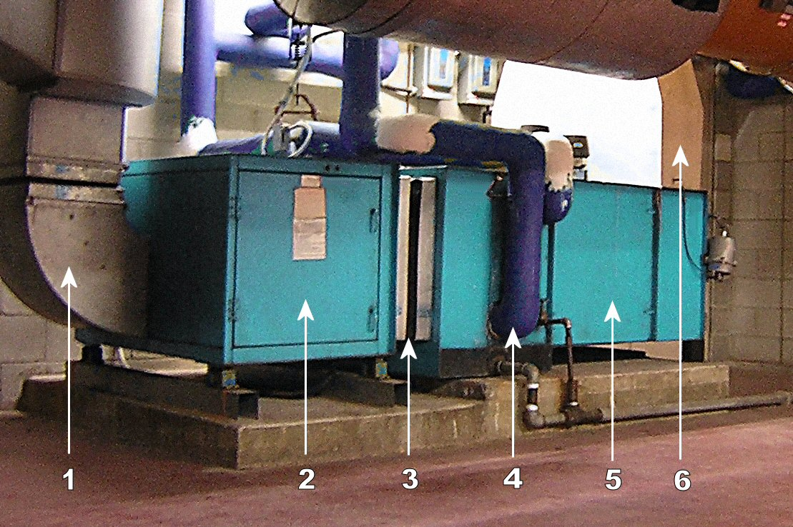

Distinguish a fan command from proof of airflow
Use a guarded low-voltage fan and a separate indicator to diagnose missing and stuck proof signals.
Recognise the proofs on an air handler
A start request goes to a starter or drive. An auxiliary contact or drive status reports state from that equipment. A current switch reports load current above a threshold. A differential-pressure switch or airflow sensor gives evidence at its own measurement location. These can disagree. For example, a belt-driven motor can draw current while a broken belt leaves the fan stationary. Find and name the specific proof on the equipment drawing, including whether the controller sees normally open or normally closed when de-energised. T45 · Command, switch and process.

Photo by P199. Original photo · Public Domain Mark.


Photo by Ali@gwc.org.uk, Wikimedia thumbnail, with on-page callouts. Original photo · CC BY-SA 2.5.

Watch a split-core current switch demonstration. Compare the sensing window and output with the Veris model below. Use the video to identify the equipment and the AA-powered lab to practise its logic. a split-core current switch demonstration on YouTube.
Build a pair of independent observations
Use an ordinary enclosed USB fan with a built-in switch, a small paper streamer secured to a stand outside the guard, and a separate extra-low-voltage proof simulator. For the simulator use a 3×AA holder, a 330 Ω resistor, a red LED and a switch in series. The switch stands in for the field proof output, and the LED for the controller input state. Use the paper table if you have no trainer. Keep the paper clear of the moving fan and use the USB fan’s original guard.
With the fan off, leave the proof switch open. Record command off, no air movement and proof LED off. Switch the fan on. Use the streamer to confirm airflow before closing the proof switch. Write down which observation is physical and which one you simulated.
Open the proof switch while the fan remains on. The spinner and streamer still work. Check the simulator supply voltage, then voltage across the switch and continuity with the batteries disconnected. The LED no longer proves the field condition.
With the fan off, leave the proof switch closed. Add a short delay before declaring the fault in your notebook, using the delay from the training case if one is supplied. The simulated switch sticks on after the physical result stops. For a separate air restriction exercise, use the P77 pressure case. Keep this fan clear of obstructions.
Read the three observations together
| Command / electrical status / physical proof | Discriminating check |
|---|---|
| On / off / no flow | Check whether the drive or starter accepted the request and whether an interlock opened. |
| On / on / weak flow | Check fan speed, dampers, belt, filter differential and which location the sensor measures. Compare against the approved sequence. |
| On / off / independent evidence of flow | Check whether the field switch changed and whether the controller input follows. Investigate a low-speed threshold, loose tube or wrong point mapping as appropriate. |
| Off / on / no flow after the expected pause | Separate a stuck or inverted input, a latched drive status and a mislabelled point. |
A current switch type and its monitored conductor are chosen by the responsible technician. The Veris H608, for example, is a split-core AC current switch with an adjustable trip point and a solid-state status output. The manufacturer specifies the application and handling. Use its manual to identify the sensing window and output terminals. Practise on the separate proof simulator. Veris H608 installation guide and photos.
Record the off, normal, missing and stuck proof states. Write which independent physical observation changes your diagnosis. At a site, use the documented start and stop delays and check the permitted authority before changing any routine or interlock.